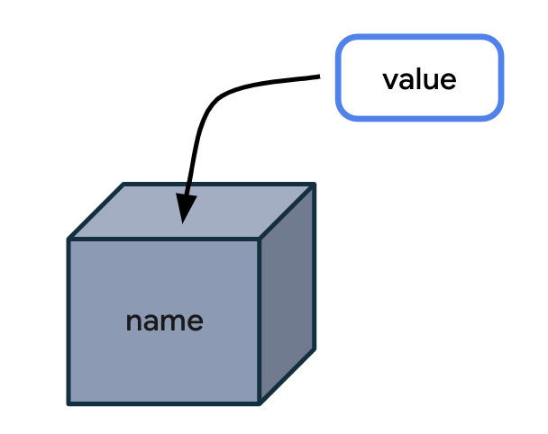
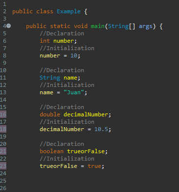

Variable
A variable is a container in a computer memory location where data, can be changed or constant, is stored. Each variable has a name in reference to its value. They made data handling less difficult allowing the use of descriptive names instead of values, they are used in calculations, input and output operations, comparations and more for example, in an accounting program, a variable can store the balance of an account and another the amount of a transaction.
As you can see in the image, the box with a label represents a memory location where the value is stored. This is what a variable is, the label is the variable name and the content inside the box are the values.
Declaration and Initilazation of a Variable
In computing, data types are the different categories of information that can be stored and processed in a program. These types help classify and organize information allowing the correct management. They include integers and decimal numbers, characters, texts string, boolean values and more.
To declare a variable in Java, you must use the following syntax:
Type variablename;The
type must be one of the eight primitive types. The variable name must follow some especific rules:
distincion between uppercase and lowercase, not starting with numbers or special characters, and
being readable. Here are some examples:
int day, month, year; boolean data; String name;
Initializating a variable means assigning it a value. The position of the variables in the code (inside of a class or a method) is important for initilazation.
How to declare and initalizate a variable?
Common and Frequently used Data Types
String
String are secuence of characters, like words, phrases, and sentences. In most programming languages, strings are represented using double quotes (for example, "hello", "123abc", "this is a string", etc). They are commonly used to store text and user input data.
int
Integers represent all numerical values without decimals. In most programming languages, they are represented by whole numbers (for example, 1, 2, 3, -4, -5, etc). Integers are used in arithmetic and logical operations.
boolean
Boolean values represent true or false. In general, programming languages, boolean values are represented using the keywords "true" or "false". Boolean values are used in condicional expressions and decision making.
float/double
Float numbers represent numerical values with decimals. Most programming languages, floating-point are represented with a decimal point (1.2, 3.14, 3.1416, -0.5). They are commonly used in complex mathematical operations that requiers decimal precision.
Precision
They allow programs to make calculations and operations with precision, taking care of the correct data handling.
Efficiency
Programs can use the correct amount of memory to store and process data. For example, an integer is stored more efficiently than a decimal.
Compatibility
They are important to make sure about different programs and systems can share and process data consistently. Standardized data types allow interoperability and communication between different systems.

Easy to use
Programmers and users can understand the type of data that is being processed. For example, a file name can be represented as a string, allowing users to recognize and understand the type of data that they are manipulating.